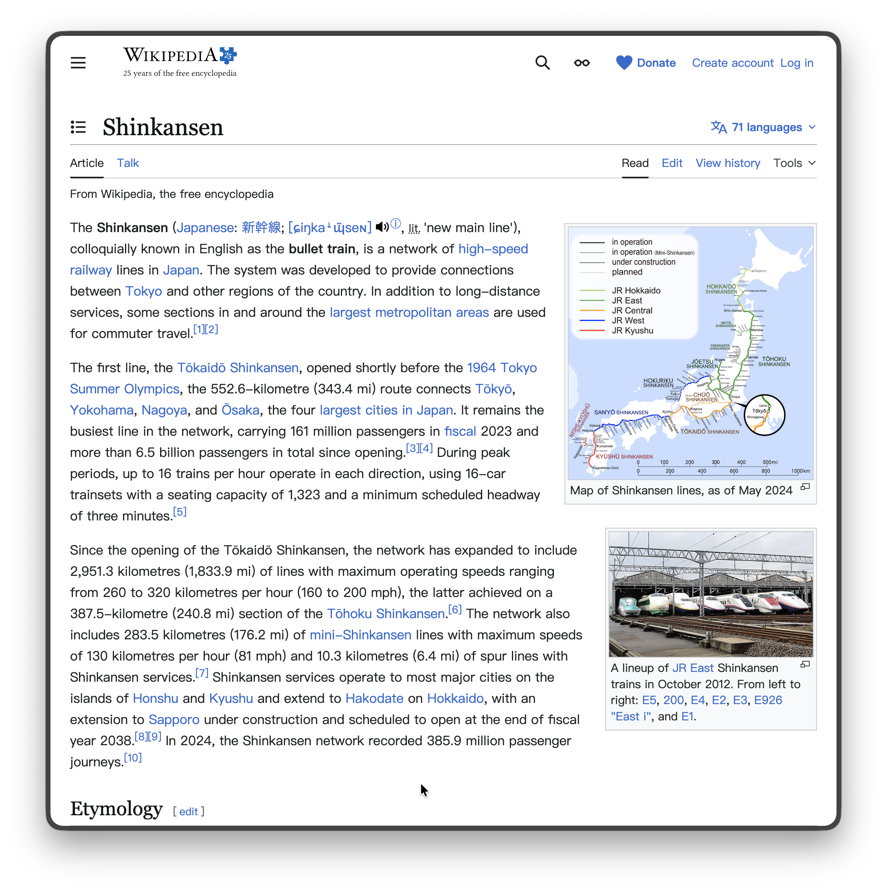
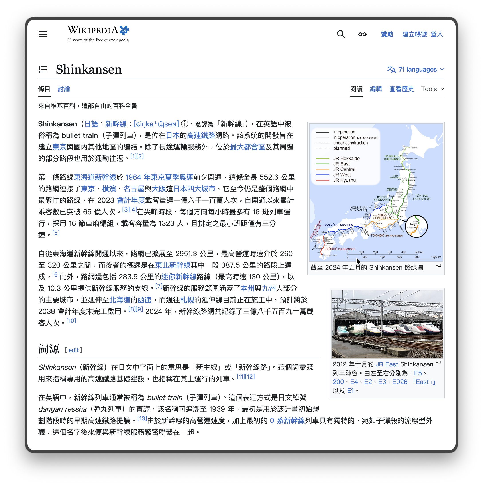

你的瀏覽內容不該經過別人的伺服器
Transit 由你的電腦直接呼叫 Google Gemini 翻譯, 不經過任何第三方
既有的沈浸式網頁翻譯工具會把你瀏覽的每一頁內容傳到第三方伺服器——無論你讀了什麼文章、看了什麼信件, 全部都可能被看光
Transit 的出發點就是保護您的隱私:
翻譯前

翻譯後

排版、連結、圖片全部保留, 看起來就像原生中文頁面
按下翻譯 1 秒看到頁面開始出現譯文, 不用等整批 API 回完再一次塞回頁面 (限 Gemini)
原地替換文字, 字型、字級、顏色、連結全部保留, 看起來就像原生頁面
按住修飾鍵 (Shift / Option / Control 任選)、游標停在段落上就只翻那一段, 譯文原地顯示; 想先自己讀、只看部分內容時不用翻整頁. 預設關閉, 設定頁一鍵開啟
原文與譯文並列顯示, 一眼對照學語言或核對譯文; 單語覆蓋與雙語對照可隨時切換
翻譯目標支援繁體中文 / 簡體中文 / 英文 / 日文 / 韓文 / 西班牙文 / 法文 / 德文, 介面語言也跟著切換
PDF / EPUB / Word / TXT / Markdown / HTML / 字幕檔整份翻譯, 全部在瀏覽器本機解析; PDF 保留原版面、Word 譯文寫回原檔、EPUB 與字幕可輸出雙語版
打開 Google 文件按翻譯, 自動切到可翻譯的閱讀版並翻譯整份, 編輯模式下的動態畫面也能讀
看影片時字幕即時翻譯成你的目標語言, 樣式跟原生字幕一致; 自動產生的字幕先經 AI 依語意重新分句, 從破碎的詞變完整句子. 可選雙語對照、可放大字幕, 直播連結、Google Drive 與 X (Twitter) 影片也適用
翻譯過的頁面點連結開新分頁、按返回鍵、或在同一頁內站內導航都自動接著翻; 往下捲動才載入的新內容也會補翻, 不用每頁再按一次
把常看的網域加進清單, 之後開啟該網站就自動翻譯, 不用每次按快速鍵; 支援萬用字元, 通知會標示「自動翻譯」讓你知道是清單觸發
頁面邊緣的懸浮按鈕點一下翻譯、長按切換引擎或叫出選單, 位置、大小、透明度可調
翻譯完成後直接在頁面上修改譯文, 翻得不理想的地方手動改掉; 要列印、存 PDF 或讓閱讀器擷取前先修好
自訂翻譯對照表, 專有名詞一律用你指定的譯名. 分全域與網域兩層, 網域規則覆蓋全域; 網域後面加路徑 (如 example.com/news) 可限定到該站的某個專欄或作品
翻譯前先掃全文擷取人名與專有名詞對照表, 同一個名字從頭到尾翻法一致, 長篇報導、小說、人名多的文章最有感. 預設關閉, 設定頁開啟
可編輯的禁用詞清單 (預設 26 條, 例如視頻 / 軟件 / 數據), 可只填禁用詞、或一併指定替換詞, 明確要求 LLM 不要使用
先翻前幾段預覽再決定是否讀完整篇, 大幅節省 token
翻過的段落自動快取, 同一頁再開不花錢
每次翻譯即時顯示花費多少錢, 設定頁可回查過去每一筆翻譯紀錄的 token 用量與費用, 支援圖表與 CSV 匯出
Gemini + Google Translate + 自訂模型(OpenAI 相容端點, 可接 OpenRouter / Together / Ollama 本機等百種模型) 並存, 依場景自由切換
內建 OpenCC 字典本地轉換——不需 API Key、不打 API、離線可用, 詞組級涵蓋台灣慣用詞 (軟件→軟體、視頻→影片). 自動互轉預設開啟, 目標是繁體時簡體網頁載入即轉繁體, 目標是簡體時反向轉換
按 Alt+S 翻譯本頁. 主要翻譯 (預設 Gemini) 無法使用或失敗時, 自動改用 Failback 翻譯 (預設 Google Translate), 沒有 API Key 也能翻譯; 快速鍵與兩組引擎都可自訂
網站作者用 translate="no" 或 notranslate 標成不翻的人名、代號、程式碼原樣保留、不送 API; 用字型顯示的圖示也不會被翻成文字而消失
從上方按鈕下載 .zip 檔案, 解壓縮到任意位置
開啟 Chrome, 前往 chrome://extensions/, 打開右上角「開發人員模式」, 點「載入未封裝項目」, 選擇解壓縮後的 transit 資料夾
點工具列的 Transit 圖示 → 設定 → 貼上你的 Gemini API Key (到 aistudio.google.com/api-keys 免費建立, 詳細教學) 完成! 按 Alt+S 翻譯本頁. 不設定 API Key 也能直接按 Alt+S, Transit 會自動改用免費的 Google Translate
遇到 bug 或有功能建議? 歡迎到 GitHub Issues回報